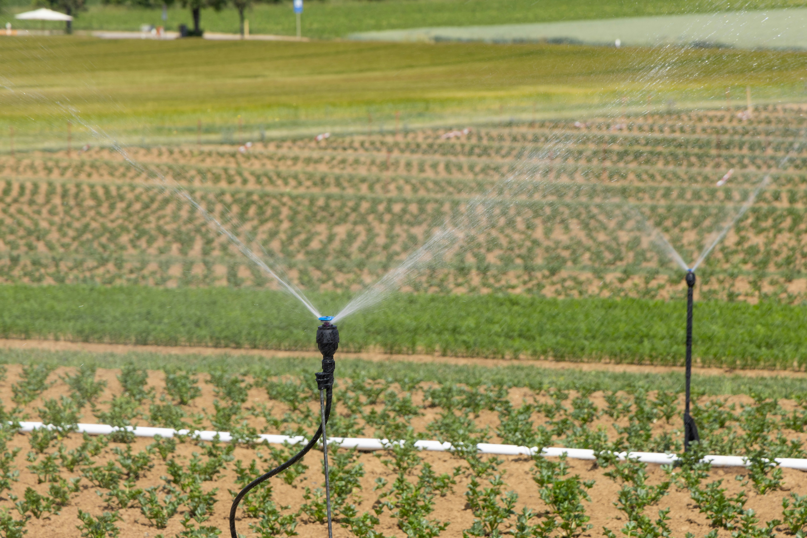

O Equilíbrio Necessário
Para o nosso futuro ser seguro, o campo precisa produzir alimentos de forma eficiente sem esgotar os recursos naturais da nossa terra.
Produção Forte
O agro abastece as cidades, gera empregos e garante que a comida chegue na mesa de milhões de pessoas todos os dias.
Preservação Ativa
Cuidar das florestas, proteger as nascentes de água e evitar poluição é o que mantém a terra fértil para as próximas gerações.
Assista: O Futuro do Agro Sustentável
Vídeo por: Fernando Sánchez Aranguren (Pexels)
Inovação e Tecnologia Sustentável
Hoje, o produtor rural usa ferramentas modernas para evitar desperdícios. Veja alguns exemplos de práticas reais:
-
 Foto: DRONE EFT / Unsplash
Foto: DRONE EFT / Unsplash
Drones agrícolas: Monitoram as plantações de cima, encontrando pragas e evitando o uso exagerado de defensivos agrícolas.
-

Foto: Being Organic in EU / UnsplashIrrigação gota a gota: Leva a quantidade exata de água que a planta precisa diretamente na raiz, economizando rios de água.
-
 Foto: American Public Power Assoc. / Unsplash
Foto: American Public Power Assoc. / Unsplash
Energia Solar: Uso de placas fotovoltaicas para gerar energia limpa nas fazendas e reduzir o impacto no ambiente.